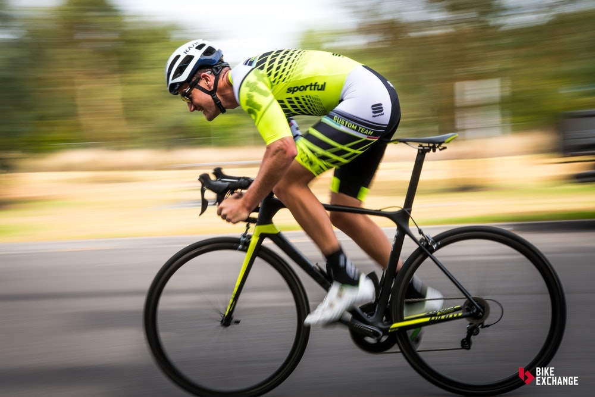
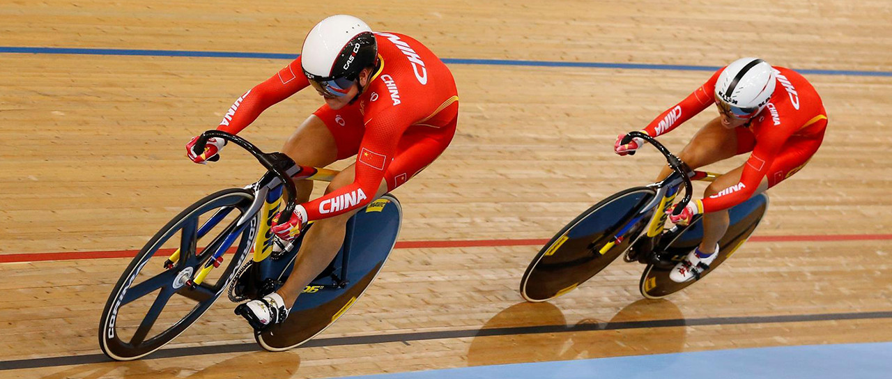

Las bicicletas de Ruta/Pista son una variante muy similar a las 1ras bicicletas de montaña antes de que se le incorporaran algun tipo de suspension;
la caracteristica principal que diferencia a este tipo de bicicletas es que estan diseñadas con un perfil mas aerodinamico y y partes menos robustas que
ayudan al ciclista a rodar con menos resistencia al avance, consiguiendo asi un mayor rendimiento utilizando una menor cantidad de energía.
El uso
de este tipo de bicicletas queda restringido unicamente para caminos de asfalto o pistas profesionales de duela, estas bicicletas deben utilizarse
para
caminos no regulares o para saltar obstaculos
Así luce una Bicicleta de Ruta/Pista
  Volver a Inicio